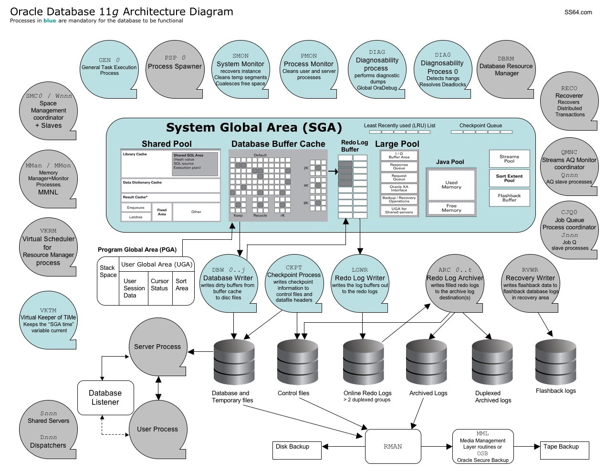

Illustrates the relationships between key database structures: memory, processes and storage.

To print this on a single page, copy the image to a word processor/presentation package and choose the fit-to page option in the print dialogue.
“Writing about music is like dancing about architecture - it's a really stupid thing to want to do” ~ Elvis Costello
Related